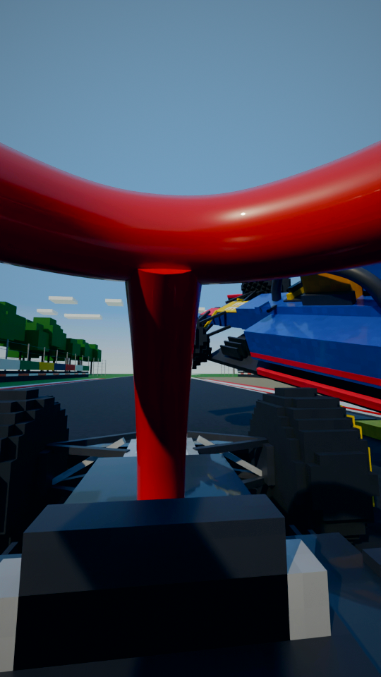
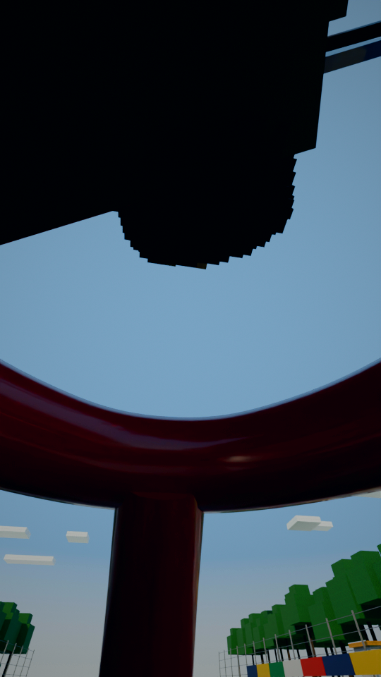
“Imagine a Formula One car landing on your head.”
POV, Hamilton's eyes through the halo (continues from shot 25): Verstappen's car lifts off the kerb on the right and comes over, its floor and rear tyre filling the top of the frame.
collision check: clean

“Lewis Hamilton doesn't have to.”
Low, close on the cockpit: Hamilton's helmet under the halo, Verstappen's car lying right on top of him.
collision check: clean

“At Monza in 2021,”
Monza: from the tifosi grandstand, the two cars side by side down the straight into the first chicane.
collision check: clean
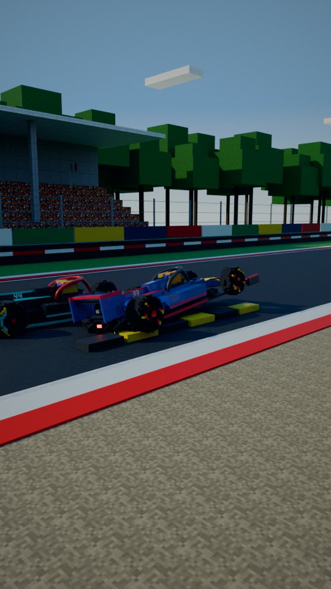
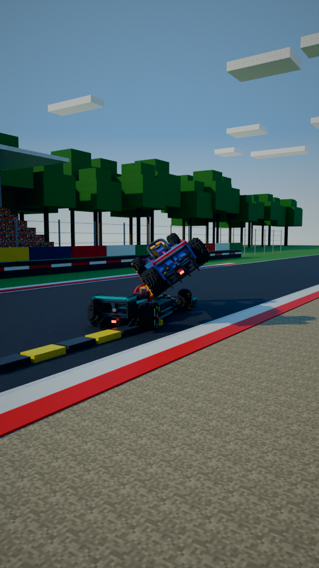
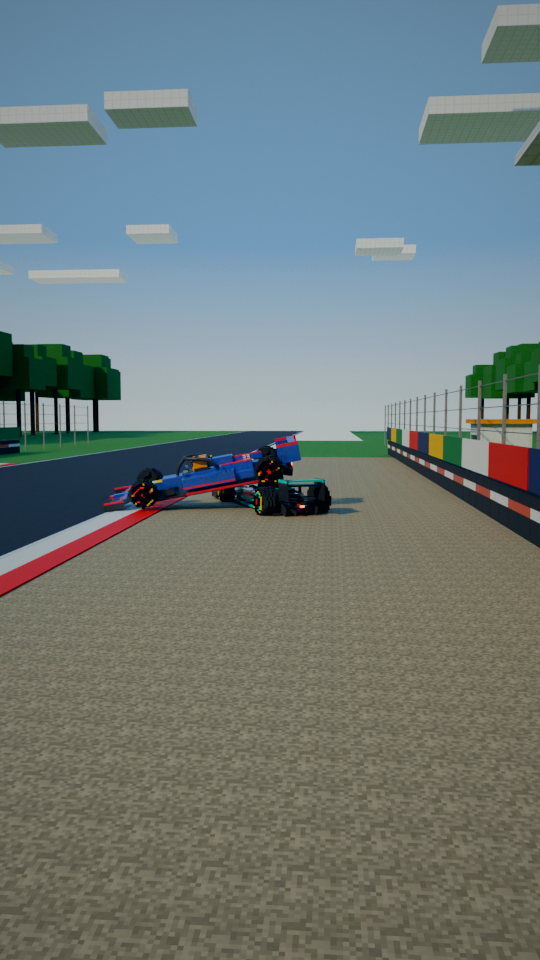
“Max Verstappen's car landed on top of his. Between”
How it happened: Verstappen's right wheels hit the yellow sausage kerb, the car is launched, lands across Hamilton's, both slide into the gravel.
collision check: clean

“his head and the tyre”
Close: the rear tyre resting on the halo's hoop, a hand's width above the helmet.
collision check: clean
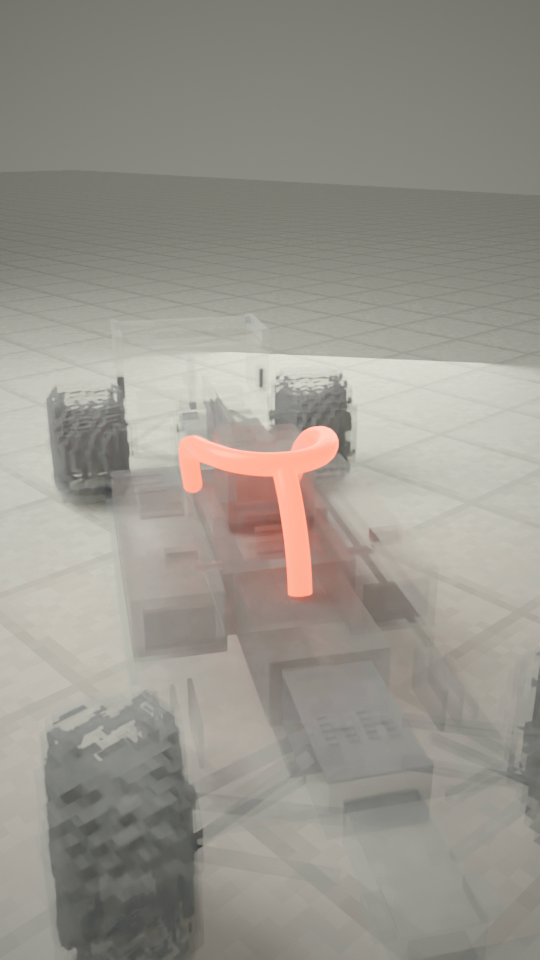
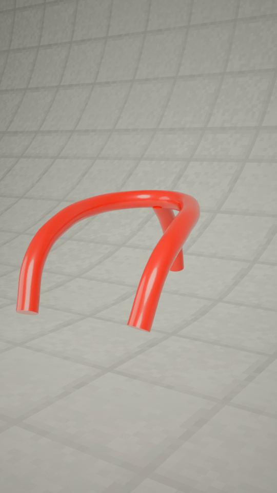
“was a curved bar called the halo.”
The car fades to grey and the halo glows, then the car is gone: just the halo, turning slowly. 'A curved bar called the halo.'
collision check: clean

“When it arrived in 2018, fans called it ugly, and”
2018: tifosi on the grandstand steps boo and hold up red-X boards as a car with the new halo passes.
collision check: clean

“some drivers agreed. Mercedes”
In a team garage: two drivers look the halo over - one shrugs, one shakes his head.
collision check: clean

“boss Toto Wolff said, "If”
2018 car launch: Wolff on stage beside the new silver car, LED wall, photographers.
collision check: clean
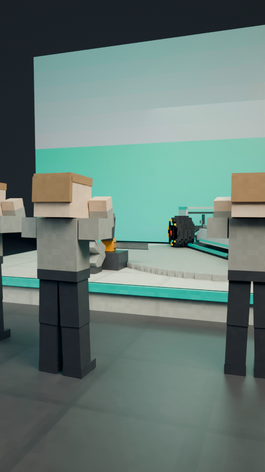
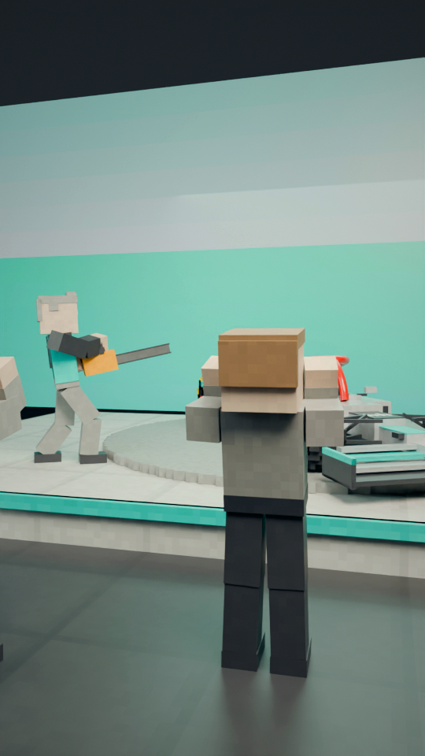
“you give me a chainsaw, I would take it off." But”
He crouches to lift a chainsaw out of its case, then holds it up at the halo with a grin; the photographers lean back.
collision check: clean
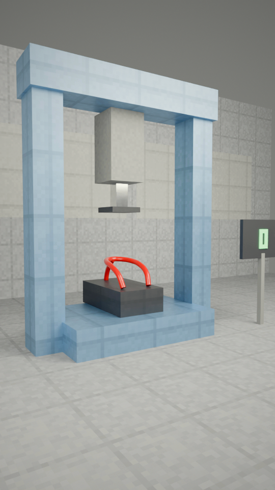
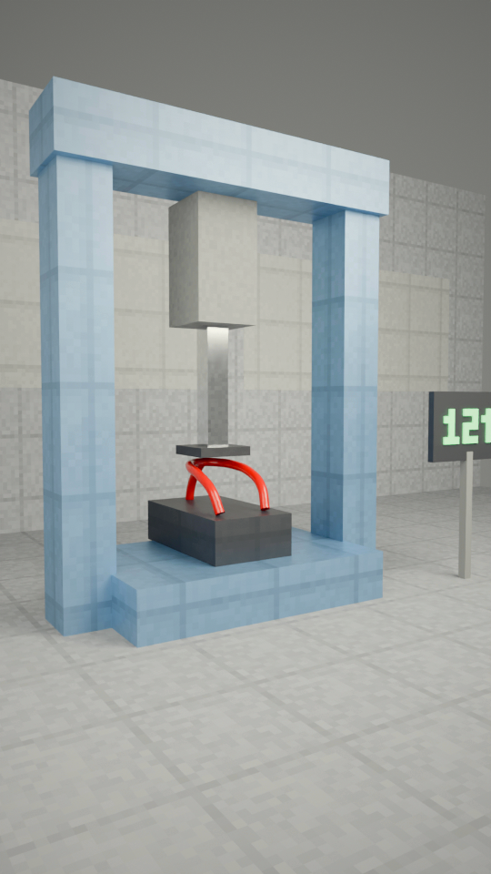
“it's built to hold about twelve tonnes:”
The FIA load test: the press comes down on the halo; the readout climbs to 12 t.
collision check: clean